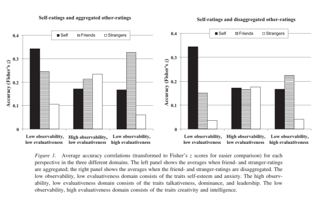

행둥관찰 -> 성격판단
시작점 : 평판
성격 판단이 중요한 이유 기회, 기대
판단은 우리의 기회에 영향 (ex 내성적인 사람들을 차갑다고 인식됨 -> 더욱 내성적이게 됨)
Self-fulfilling prophecies 또는 다른 사람들이 기대하는 대로 되려고 하는 경향
Pygmalion in the classroom (좋은 피드백(기대) -> 좋은 성취)
현실에서는 일부 기대가 정확한 판단을 기반으로 한 것일 수 있음 -> 자기 충족 예언은 이미 존재하는 행동 경향을 확대하고 강조할 수 있다
Constructivism : 구체적 현실x, 모든것은 정신적 구성물(틀림)
Funder’s Answer: Critical Realism(비판적 현실주의)
: 진리의 부재 -> 현실의 해석이 동등하게 유효 / 정확성은 판단하기 어렵지만, 그럼에도 불구하고 우리는 합리적일 수 있다 / We gave meaning frameworks
사람들은 다양한 frameworks를 공유, But 다양한 영역에서 다르게 나타날 수 있음
Statistical Term
어떤 사람들이 다른 사람들보다 더 정확한 평가자인가?
연구결과
Q : 어떤 사람들은 다른 사람들에게 더 쉽게 판단되는가? / A : 일관적인 사람
From Jack Block: 통합된 자아x -> 내적정체성x, 불안정한 반응, 자아의심, 절망
Carl Rogers: 안정된 핵심 자아를 가지는 중요성을 강조
Postmodern approaches: 조절된 정체성을 가지는 중요성을 강조
Q: 어떤 특성은 다른 특성보다 판단하기 쉬운가? / A: 보다 눈에 띄는 특성은 정확하게 판단하기 쉽다.
Watson (1989) - “Hello, my name is…”
Classic social psychological idea(틀림): 심사자들 간의 합의는 심사 대상에 대한 대화의 결과(평판)
Stranger-Stranger Agreement
Introspection illusion(자기 관찰의 환상) : 개인이 자신의 사고 과정에 접근하고 정확하게 정신 상태를 보고할 수 있다고 믿는 인식적 편향
high observability Self < Friends
low evaluativeness Self > Friends
Q: 정확성은 정보의 양에 달려 있는가? / A: Acquaintanceship Effect(알려짐 효과) : 정보가 많을수록 판단이 더 정확
Q: 정확성은 정보의 유형에 달려 있는가?
"약한 상황"(판단하려는 특성을 드러내게 함)에서 정보를 얻는 것이 이상정
“Do not hear what other people say about you” is not helpful
평가가 높은 특성 (예: 지성)과 관련된 경우 가까운 사람들의 의견을 들어보세요
관찰이 어려운 특성 (예: 자존감)에 대해서는 자신의 판단에 집중하세요